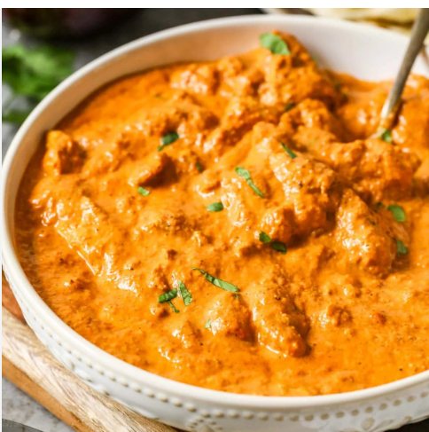

Butter Chicken (Murgh Makhani)
Tender chicken pieces simmered down in an incredibly rich, creamy, and heavily spiced tomato-butter gravy.
Ingredients
- 500g Boneless chicken thighs
- 1 cup thick yogurt (for marinade)
- 2 tbsp Kashmiri chili powder
- 2 tbsp ginger-garlic paste
- 4 large tomatoes, pureed
- ½ cup heavy cream
- 3 tbsp butter
- 1 tsp garam masala
- 1 tbsp dried fenugreek leaves (Kasuri Methi)
Instructions
- Marinate the chicken: Mix the yogurt, half the chili powder, half the ginger-garlic paste, and salt. Coat the chicken completely and marinate for at least 30 minutes.
- Cook the chicken: Heat a pan with oil and sear the marinated chicken pieces until slightly charred and cooked through. Remove from pan.
- Make the sauce base: In the same pan, melt the butter. Add the remaining ginger-garlic paste and sauté for a minute. Add the tomato puree and cook until the oil begins to separate.
- Spice it up: Stir in the remaining chili powder and salt. Cook for another 5 minutes. Add a splash of water if the sauce is too thick.
- Finish the dish: Return the chicken to the pan. Reduce the heat and stir in the heavy cream, garam masala, and crushed dried fenugreek leaves. Simmer gently for 5 minutes. Serve with hot naan!